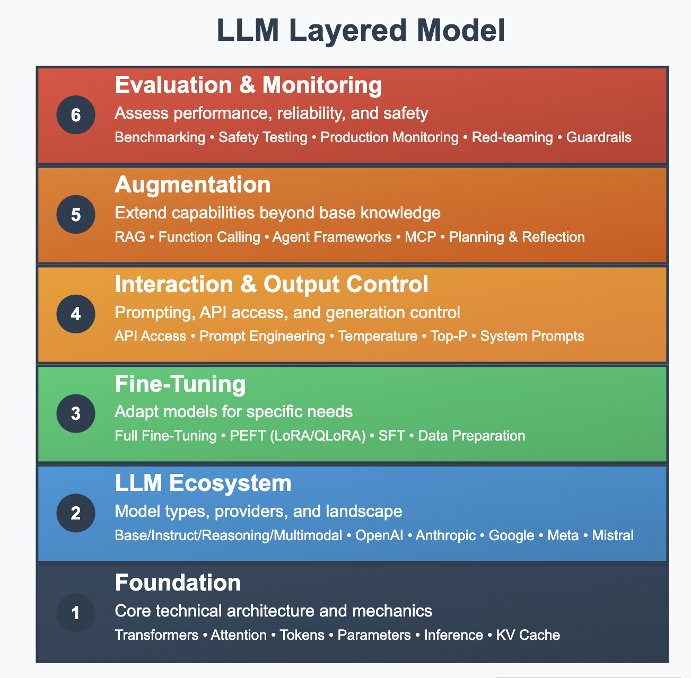

Introduction: Why Layers Matter
If you're reading this, you've probably used ChatGPT, Claude, or another AI tool. Maybe you've been amazed by what it can do. Maybe you've been frustrated when it confidently told you something completely wrong. Maybe you're wondering if AI will change your job, your industry, or the world.
Here's the thing: most people interact with AI like they're pressing buttons on a magic box. They type something in, get something out, and hope for the best. When it works, great. When it doesn't, they shrug and blame "AI."
But AI isn't magic, and it's not a single thing. What we call "AI" today – specifically Large Language Models (LLMs) – is actually a stack of technologies, techniques, and tools working together. Understanding this stack is like getting an X-ray vision into how these systems actually work.
Why Should You Care?
Because knowing how something works gives you power over it. When you understand the layers, you can:
- Make better decisions about which AI tools to use
- Understand why AI fails in certain ways (and how to work around it)
- Spot the difference between hype and reality
- Have informed conversations about AI's impact on your work and life
- Build better solutions if you're in a position to influence AI adoption
The Six Layers
Think of modern AI systems like a building. You don't need to be an architect to live in one, but understanding the basic structure helps you use it better. Here are the six layers we'll explore:
Layer 1: Foundation – The core mechanics. How AI actually processes and generates text. This is the engine room.
Layer 2: LLM Ecosystem – The landscape of available models. Who makes them, what types exist, and what makes them different.
Layer 3: Fine-Tuning – How generic models become specialists. Taking a generalist AI and teaching it to be an expert in your specific needs.
Layer 4: Interaction & Output Control – The steering wheel and pedals. How we communicate with AI and control what it produces.
Layer 5: Augmentation – Giving AI superpowers. Connecting it to real-time data, tools, and actions in the real world.
Layer 6: Evaluation & Monitoring – Quality control. Making sure AI stays helpful, accurate, and safe over time.
Who This Book Is For
This book is for anyone who wants to understand AI beyond the headlines. You don't need a computer science degree. You don't need to know how to code. You just need curiosity and a willingness to look under the hood.
Maybe you're:
- A business leader making decisions about AI adoption
- A professional wondering how AI will affect your field
- A curious person who wants to understand the technology shaping our future
- Someone who's been using AI tools but wants to use them better
What You Won't Find Here
No mathematical formulas. No code samples. No promises that AI will solve all your problems or dire warnings that it will end the world.
What you will find is a clear, practical explanation of how these systems actually work, illustrated with analogies that stick and examples from real-world use.
How to Read This Book
Each chapter covers one layer and builds on the previous ones. You can read straight through for the full picture, or jump to specific layers that interest you most. Just know that the layers work together – understanding their connections is as important as understanding each piece.
Ready? Let's start with the foundation and work our way up.
Visuals
License
© 2025 Uli Hitzel This book is released under the Creative Commons Attribution–NonCommercial 4.0 International license (CC BY-NC 4.0). You may copy, distribute, and adapt the material for any non-commercial purpose, provided you give appropriate credit, include a link to the license, and indicate if changes were made. For commercial uses, please contact the author.